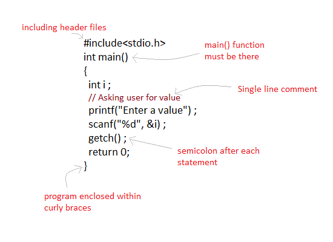

What exactly makes a language C-like?
It means that most of the functionality provided by C and the syntax within C is present in the language. The idea of being C-like already is a subjective thing. For example, any of the following can make the language qualify as C-Like.
| Syntax Rules | Background Rules |
| Zero index language | Compiling and only compiling |
| Semicolons and braces | Pointers and addresses |
| Datatype at declaration | No mixing datatypes |
| main function | |
| import statements |
An example for several of these rules working at once can be illustrated by the following screenshot.
This shows the usage of semicolons, braces, main funciton, and importing files. This is a not an exhaustive list of all things that can make a language C-like. Whether or not you agree all of these rules are in the right sections, these are all attributes present within the C-like languages. If you ever used a language that held at least one of these rules, you can (however innacurately) say the language is C-like. Usually C-like languages hold many of the syntax rules and can hold none of the background rules. You will notice that with each one of these rules that is checked, this C-like language begins to look more and more like C because...
C-like means like C.